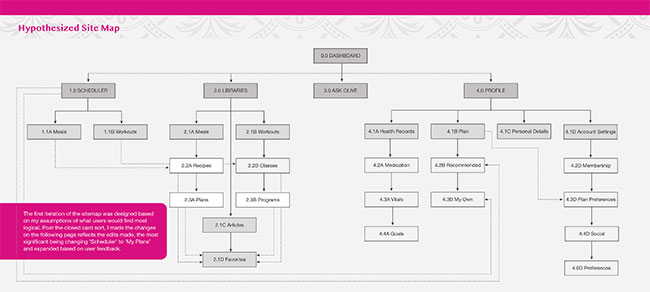

CASE STUDY | UX
Better Health Starts with Better Health Education
Unleashing AI's potential to Foster Personalized Achievement in Health and WellnessPROJECT BACKGROUND
Introducing Olive! But hold on, let’s take a step back. Allow me to introduce you to the source of inspiration behind Olive. The initial idea for this web application originated from the project brief I chose during my participation in the Immersion program within CareerFoundry’s UX Design Bootcamp. This assignment tasked me with creating an inclusively designed, responsive web portal (app). The primary goal was to offer comprehensive health and wellness information while also providing users with a platform to store their medical records and appointments.
Allow health-conscious individuals to log in to a responsive health and wellbeing portal to record their health and medical information, and access general physical and mental wellbeing features.
HYPOTHESIS
"If an app provides personalized guidance tailored to the unique needs of each individual, then it is more likely that they will maintain inspiration and motivation, ultimately leading to positive results. I believe that incorporating AI capabilities will better personalize, thereby enhancing the user experience."
RESEARCH GOALS
With my hypothesis established, I proceeded to try to answer the following questions:
- What motivates our users to want to lose weight? What barriers prevent them from getting or staying motivated?
- What type of support and tools do potential users desire to help keep them motivated to meet and maintain their wellness goals?
- What pain points do potential users face when using health and fitness apps to help meet wellness goals?
USER PERSONAS
To better comprehend my users’ viewpoints, I synthesized data from surveys and interviews. This formed a comprehensive understanding of their identities, usage context, motivations, and challenges. This resulted in the formation of a couple distinct personas, with the primary being—
Layla, the Ultimate Caregiver
Layla, my primary persona, perfectly represents my target user demographic. She deals with weight issues and daily fatigue while juggling demanding caregiving responsibilities, leaving her little time for health research. Layla mirrors a significant portion of users facing similar time constraints due to caregiving duties, whether it's for parenting, a spouse, or elderly parents. Her situation makes her an ideal representative of my intended demographic.
“You’re doing something and you’re not seeing the results and no one is telling you the results —that’s more detrimental.”
PROBLEM STATEMENT
With my persona developed and solidified, I reached the point where I began contemplating how to devise a solution.
Layla needs a way to create a healthier lifestyle to improve overall health without the pressure of lengthy workouts and food calorie tracking.
We will know this to be true when we see an increase in average calories burned and/or activities completed and reduction in joint pain on a regular basis.
INFORMATION ARCHITECTURE
Before delving into the design of my web portal, my first step was to grasp the crucial content that required sharing. For the initial assessment, catering to both the user’s requirements and project criteria, I prioritized four key features:
- Dashboard
- Medicine tracking
- Fitness and meal tracking
- Education
These selections formed the basis for devising a well-founded user flow. Through a card sorting activity involving anonymous volunteers, the flow was refined to better synchronize with real-world user expectations.
PROTOTYPING
With a design mocked up it was time to move on to the testing phase. I used Adobe XD to pull everything together and create my first functioning prototype. I created a test plan with a simple goal of assessing the mobile prototype’s:
- Learnability
- Efficiency
- Elimination of pain points
In addition to identifying usability friction points, some capabilities I wanted to confirm were:
- Medication logging
- Accessing workout from scheduled wellness plan
- Accessing education library
- Satisfaction with offered features
BRANDING
After contemplating the emotions I wanted to evoke and ensure they harmonized with the purpose and objectives of the application I settled on a primary color palette that leans towards bluish-green, accompanied by a reddish-orange shade.
To complete the visual aesthetic of the Ask Olive web portal, I formulated a series of UI guidelines and documented them in a couple of references for future use.
MEET OLIVE!
Ask Olive has transformed into a comprehensive web portal application that seeks to leverage AI to cater to the needs of individuals grappling with health and wellness challenges. Upon signing up and completing a thorough questionnaire, users gain the opportunity to receive personalized meal and fitness plans aligned with their specific requirements. The days of scrutinizing article credibility for helpful advice are over. Users can simply ask Olive at any time, receiving not only answers but responses tailored to their unique health conditions and insights from repeated interactions.
The Ask Olive app facilitates medication management, enabling users to log their medication intake. It also hosts a repository of health resources, encompassing articles, fitness videos, and alternative meal plans. Moreover, it fosters community building by enabling users to connect with friends within the app.
Following months of empathizing, defining, ideating, prototyping, testing, and iterating, I’ve crafted an application that not only fills me with pride but also possesses the potential to transform lives.
LEARNINGS
Throughout this process, I’ve gleaned a couple of lessons—and not just about the process itself:
- A significant number of individuals feel neglected when attempting to enhance their fitness due to the limited consideration given by most apps to those dealing with chronic illnesses or conditions that present exercise challenges. It’s crucial to ensure they feel acknowledged and to provide them a voice in their personal journey. This app is dedicated to fulfilling that role. Consequently, obtaining continuous feedback from this specific demographic will play a pivotal role in the app’s success.
- I can’t profess a genuine concern for the well-being of those often overlooked without integrating accessibility into design. I hadn’t previously considered factors like color contrast, font size, or element spacing. Moving forward, I’ll incorporate these and many other considerations into every phase of a project.
CONCLUSION
For many, meeting wellness goals can be challenging. It’s not merely a matter of calories in versus calories out. Numerous factors, including genetics, physical condition, psychological aspects, and learned behaviors, come into play. The average person often lacks the necessary training and knowledge to navigate these complexities. Having access to an app capable of swiftly accessing, analyzing, and providing guidance holds the potential to significantly transform one’s life. That’s because better health starts with better health education. Just ask Olive!